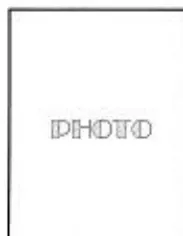
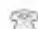

ANNEXE 4.a : Exemple de feuille de surveillance per anesthésique (page 1)
DATE :
CHECK-LIST FAITE
CONTROLE DES APPUIS
| Heure | |||||||||
| Événements position | |||||||||
| VC VS VACI | 200 | ||||||||
| Respirateur : | 180 | ||||||||
| 160 | |||||||||
| 140 | |||||||||
| 120 | |||||||||
| 100 | |||||||||
| 80 | |||||||||
| 60 | |||||||||
| 40 | |||||||||
| 20 | |||||||||
| FR x VT | |||||||||
| + PEP & (I / E) | |||||||||
| SpO2 | |||||||||
| Et CO2 | |||||||||
| Fi O2 | |||||||||
| Fi N2O | |||||||||
| P+ insufflation | |||||||||
| TOF | |||||||||
| Halogéné Fi | |||||||||
| Fe | |||||||||
| PSE 1 : | |||||||||
| PSE 2 : | |||||||||
| PSE 3 : | |||||||||
| SORTIES | Diurèse | ||||||||
| Aspiration | |||||||||
| APPORTS | |||||||||
ANNEXE 4.a : Exemple de feuille de surveillance per anesthésique (page 2)
PROTECTION DES YEUX
COUVERTURE CHAUFFANTE
Monitoring per op particulier
Produits sanguins
FR x VT
+PEP & (I/E)
SpO2
EtCO2
Fi O2
FiN2O
P* Ins.
TOF
Fi
Fe
Diurèse
Aspiration
Apports totaux :
Ringer : ml SG5 % : ml
Macromolécules :
Produits sanguins :
ANNEXE 4.b : Exemple de feuille de surveillance per anesthésique
| Date : _____ | Heures | 10 | 20 | 30 | 40 | 50 | 60 | 10 | 20 | 30 | 40 | 50 | 60 | 10 | 20 | 30 | 40 | 50 | 60 | 10 | 20 | 30 | 40 | 50 | 60 | ||||
|
MONITORAGE - PNI - Cardioscope - SpO2 - Monitorage ET CO2 - Monitorage halogénés - Neurostimulateur - Sonde vésicale - Sonde gastrique - Réchauffeur - Sonde température - Autres REEVALUATION PRE-OPERATOIRE |
VOIE VEINEUSE PERIPHERIQUE Lieu _____ Type _____ Autres _____ TYPE CHIRURGIE Propre Propre-Contaminé Contaminé Sale |
ANESTHESIE | Temps Opérateur | ||||||||||||||||||||||||||
| POSITION PATIENT Déclive Proclive DD DV DLG DLD Gynéco Genu pectoral Billot |
200 40° 20 | ||||||||||||||||||||||||||||
| TYPE ANESTHESIE Loco-régionale Rachi Péridurale ALRIV Périlombaire Bloc Locale Générale AG sans intubation AG avec intubation |
150 38° 15 | ||||||||||||||||||||||||||||
| INTUBATION OT NT N° ..... Difficile |
100 37° 10 | ||||||||||||||||||||||||||||
| MASQUE LARYNGE N° ..... FIBROSCOPIE Dr ..... |
50 34° 5 | ||||||||||||||||||||||||||||
| VENTILATION Spontanée Masque Autre OXYGENOTHERAPIE l/min. |
pouls θ TA | ||||||||||||||||||||||||||||
| RESPIRATEUR VT X f ..... FI02/N2O ..... Circuit Ouvert Fermé |
SPO2 | ||||||||||||||||||||||||||||
| SALLE DE REVEIL Réveil simple Réveil monitoré |
ET CO2 | ||||||||||||||||||||||||||||
| Signature | HALOGENES | ||||||||||||||||||||||||||||
| MEDICAMENTS | |||||||||||||||||||||||||||||
| PERFU | |||||||||||||||||||||||||||||
ANNEXE 5.a : Exemple de feuille de SSPI
| RÉVEIL | AMBULATOIRE | ||||||||||||||||||||||
|---|---|---|---|---|---|---|---|---|---|---|---|---|---|---|---|---|---|---|---|---|---|---|---|
| Date : _____ IDE : _____ | Date : _____ IDE : _____ | ||||||||||||||||||||||
| PRESCRIPTION | PRESCRIPTION | ||||||||||||||||||||||
|
Score ALDRETE Toutes les 15 minutes : la première heure Toutes les 30 minutes : les heures suivantes |
Score de « SORTIE DOMICILE » Toutes les 15 minutes : la première heure Toutes les 30 minutes : les heures suivantes |
||||||||||||||||||||||
| PRESCRIPTIONS AU RÉVEIL | PRESCRIPTIONS AMBULATOIRES | ||||||||||||||||||||||
| SCORE D'ALDRETE dès que >9 : sortie réveil possible | SCORE DE « SORTIE DOMICILE »>9 : sortie possible | ||||||||||||||||||||||
| P A R A M È T R E S |
HEURES | ||||||||||||||||||||||
| Niveau Activité | |||||||||||||||||||||||
| Fréquence respiratoire | |||||||||||||||||||||||
| TA | |||||||||||||||||||||||
| Fréquence cardiaque | |||||||||||||||||||||||
| SP02 | |||||||||||||||||||||||
| Nausées / Vomissements | |||||||||||||||||||||||
| Douleur/EVA | |||||||||||||||||||||||
| Saignement | |||||||||||||||||||||||
| Diurèse | |||||||||||||||||||||||
| SCORE D'ALDRETE | SCORE DE « SORTIE DOMICILE » | ||||||||||||||||||||||
| INCIDENTS | INCIDENTS | ||||||||||||||||||||||
| Signatures médecins D'..... D'..... | Signatures médecins D'..... D'..... | ||||||||||||||||||||||
Nom : ..... Intervention : .....
Prénom : ..... Service : ..... Type d'anesthésie : .....
| T° | TA | P | 10 | 20 | 30 | 40 | 50 | 10 | 20 | 30 | 40 | 50 | 10 | 20 | 30 | 40 | 50 | 15 | 30 | 45 | Date : | |||||||||
| 40 | 24 | 140 | ANESTHESISTE : | |||||||||||||||||||||||||||
| 39 | 22 | 120 | INFIRMIER(E) : | |||||||||||||||||||||||||||
| 38 | 20 | 100 | HEURES : | |||||||||||||||||||||||||||
| 37 | 18 | 80 | Arrivée : | |||||||||||||||||||||||||||
| 36 | 16 | 60 | Départ : | |||||||||||||||||||||||||||
| 35 | 14 | 40 | ||||||||||||||||||||||||||||
| 34 | 12 | 20 | ||||||||||||||||||||||||||||
| 33 | 10 | |||||||||||||||||||||||||||||
| 32 | 8 | |||||||||||||||||||||||||||||
| 31 | 6 | |||||||||||||||||||||||||||||
| 4 | ||||||||||||||||||||||||||||||
| VENTILATION | O2 |
|
||||||||||||||||||||||||||||
| FR | ||||||||||||||||||||||||||||||
| Spo2 | ||||||||||||||||||||||||||||||
| SCORES | Sédation | Observations : | ||||||||||||||||||||||||||||
| Douleur | ||||||||||||||||||||||||||||||
| Motricité | ||||||||||||||||||||||||||||||
| Effets II | ||||||||||||||||||||||||||||||
| POINTS | Diurèse | |||||||||||||||||||||||||||||
| S. Gastrique | ||||||||||||||||||||||||||||||
| Redons | ||||||||||||||||||||||||||||||
| APPORTS | Perfusions | |||||||||||||||||||||||||||||
| Sang | ||||||||||||||||||||||||||||||
| Dérivés | ||||||||||||||||||||||||||||||
| SE | ||||||||||||||||||||||||||||||
| Titration | ||||||||||||||||||||||||||||||
| INJECTIONS MEDICAMENTS | Signature : | |||||||||||||||||||||||||||||
| PANSEMENT | ||||||||||||||||||||||||||||||
| EXAMENS COMPLEMENT. |
ANNEXE 6.a : Exemple de feuille de prescription postinterventionnelle
| PRESCRIPTIONS POST-OPÉRATOIRE | Etiquette | ||||||||||||||||||||||||||||||
| Du | au | ||||||||||||||||||||||||||||||
| D' | ..... | ||||||||||||||||||||||||||||||
| INTERVENTION ..... | |||||||||||||||||||||||||||||||
| THERAPEUTIQUE | |||||||||||||||||||||||||||||||
| Perfusions ..... ..... ..... ..... Antalgiques ..... ..... ..... ..... Anticoagulants ..... ..... ..... ..... | Antibiotiques ..... Médicaments ..... ..... ..... Examens complémentaires :
Consultations à prévoir ..... Prescriptions CV ..... ..... | ||||||||||||||||||||||||||||||
ANNEXE 6.b : Exemple de feuille de prescription postinterventionnelle (page 1)
Service Chirurgie Thoracique
Pr. P. Fuentes
Nom
Intervention:
Date:
Chir.: _____
AR: _____
V
AP1
N/C
| % |
| % |
| % |
| % |
Produits transfusionne
Date: _____
AP2
En Y
Bilan sérologique pré-transfusion
à faire déjà fait
| h | |||||||
| h | |||||||
| h |
APD (SE):
-----
-----
-----
| j | 1 | 2 | 3 | 4 |
| Dose | ||||
| Vit. (ml/h) |
ACP (Pompe):
Produit: _____
Titration en S-SPIT: EVA<3 PCA 3<EVA<5 EVA>5
Bolus: _____
Période d'interruption: S-SPIT 10 min Salle d'hospitalisation _____ min
Bolus: _____
_____
_____
Anticoagulation/Prophylaxie antithrombotique
SC
IV
Voie Orale:
Prescriptions urgentes:
Modifications:
Date:
Médecin prescripteur
Médecin prescripteur
Ce document portant la signature du prescripteur, a valeur d'ordonnance
© Nové 8
ANNEXE 6.b : Exemple de feuille de prescription postinterventionnelle (page 2)
Date: / /
| DRAINS THORACIQUES | OXYGENOTHERAPIE | ||||||
|---|---|---|---|---|---|---|---|
| Siphonnage Aspiration |
DROIT | GAUCHE | MEDIAST | Continue | Discontinue | Date | |
| AEROSOLS | l/mn | ||||||
| Humidificateur | Nébulisateur Ultrasonique | ||||||
SONDE GASTRIQUE * Ecoulement libre - Siphonnage - Aspiration.....cm eau.
* Poser - Clamper - Retirer.
| ALIMENTATION | A jeûn | Eau seulement | 1ère Diét. | Normal |
|---|---|---|---|---|
| Date | ||||
| Date | ||||
| Date |
Diabétique
Pateux
Sans sel
Supplémentation calorique
| JEJUNOSTOMIE | Date | ||
|---|---|---|---|
| Produit Quantité/24 h autres |
SONDE URINAIRE Poser - S. évacuateur - à demeure - Réduquer - Retirer CYSTOCATHETER
| SURVEILLANCE | FC-TA | FR | Conscience | EVA | SpO2 | T° | Diurèse | PVC | HGT | |
|---|---|---|---|---|---|---|---|---|---|---|
| SSPI | min | min | min | min | min | min | h | h | h | h |
| HOSPITALISATION | h | h | h | h | h | h | h | h | h | h |
| EXAMENS | Nb | K | mot | Ca | Gly | Alco | SI | GD | GR | Trop | CPK | Créa | GR | GB | Hb | Ht | Form | Plaq | Fib | TP | TCK | |||||
|---|---|---|---|---|---|---|---|---|---|---|---|---|---|---|---|---|---|---|---|---|---|---|---|---|---|---|
| SSPI | ||||||||||||||||||||||||||
| si drains > | ||||||||||||||||||||||||||
| Date | ||||||||||||||||||||||||||
| Date |
| SSPI | Thorax | Gazo | ECG | CBC | Hémoc | CBU | Urines | Autres | |
|---|---|---|---|---|---|---|---|---|---|
| Date | |||||||||
| Date | |||||||||
| Date |
PROTOCOLES: APD PCA Autre.....
Autres examens: .....
Ce document portant la signature du prescripteur, a valeur d'ordonnance
© Nov98
| Médecin prescripteur |
ANNEXE 6.c : Exemple de feuille de prescription postinterventionnelle informatisée
(à partir d'une bibliothèque de modèles créés par les prescripteurs)
FEUILLE DE PRESCRIPTIONS AVEC SERINGUE ELECTRIQUE
Date 9/11/2001
Anesthésiste : Dr xxxxxxxxxxxxxx
AG Rachianesthésie Sédation Sédation+AL Locorégionale
PATIENT :
(ou coller étiquette)
INTERVENTION : PTG D
1°) EN SALLE DE REVEIL :
SOINS : O2 : 3 l/mn
2g Prodaf 5 mg Viscéralgine : miniflac Fait en per-op
100mg Profenid 50 mg Azantac: miniflac Fait en per-op
Titration IV en SSPI :
Morphine Temgesic
SURVEILLANCES : Pouls, TA, Respiration, Conscience, EVA, EVS
BLOC .....
FAIT A FAIRE SANS OBJET SI BESOIN
(Préparer ..... ml de ..... %)
AUTRE :
2°) AU SERVICE
PERFUSIONS : BIONOLYTE 5% (1000 ml +.....Primperan) X ...../24h
SERINGUE ELECTRIQUE en Y :
(100 mg Profenid + 10 mg Morphine)/50 cc Physio : .....ml/h
RELAIS DES ANTALGIQUES :
Codoliprane systématique/6h ( demain )
Diantalvic /8h si besoin
Voltarene LP 1/j
Temgesic sublingual si besoin : 1 à 2 glossette(s)/8h
Morphine 1/2 amp SC/6h en complément si besoin
REPRISE DU TRAITEMENT HABITUEL COMPLET à partir de ce soir
LOVENOX :
DIVERS :
SIGNATURE :
ANNEXE 7.a : Exemple de compte-rendu anesthésique
BILAN ALLERGOLOGIQUE REALISE
.....
.....
.....
.....
TRANSFUSIONS EFFECTUEES
.....
.....
.....
.....
CARTE D'ANESTHÉSIE
Nom : .....
Prénom : .....
Date de naissance : .....
Adresse : .....
.....
.....

Vous devez conserver cette CARTE D'ANESTHÉSIE sur vous avec vos papiers d'identité, et la présenter lors de toute anesthésie ultérieure.
Département d'Anesthésie
CLINIQUE

ANESTHÉSIES PRATIQUÉES
| Date | Type D'anesthésie | Produits utilisés | Observations | Nom de l'anesthésiste Adresse et téléphone |
|---|---|---|---|---|
| 1re | ||||
| 2e | ||||
| 3e | ||||
| 4e | ||||
| 5e |
| CENTRE HOSPITALIER ET UNIVERSITAIRE DE | |
| Pr. DEPARTEMENT D'ANESTHESIE-REANIMATION | PR SERVICE DE CHIRURGIE THORACIQUE |
Docteur
Praticien Hospitalier Anesthésie - Réanimation
N° d'Ordre :
06 82
Le
Je soussigné Dr _____, certifie l'authenticité des faits suivants survenus
chez _____.
La consultation d'anesthésie pratiquée le _____ par le Dr _____, mentionnait :
Mallampati _____,
Ouverture de bouche _____ mm,
Distance thyro-mentonnière _____ cm,
Autres: « _____, »
Conclusion: « _____, »
Lors de l'anesthésie générale nécessaire à l'intervention du _____, il a été constaté une
difficulté d'intubation orotrachéale :
Solution utilisée:
Commentaires:
Certificat établi pour faire valoir ce que de droit.
A présenter au médecin anesthésiste avant toute anesthésie.
Concernant ..... né(e) le .....
CONSULTATION D'ANESTHESIE : le ..... , Docteur
Antécédents médicaux et chirurgicaux :
Antécédents anesthésiques :
Allergies :
Examen clinique :
Traitement en cours :
Examens biologiques :
CONCLUSION DE LA CONSULTATION D'ANESTHESIE :
+ + + + + + + + + + +
Prémédication 1 heure avant l'intervention :
Anesthésie proposée :
Type et date de l'intervention :
Anesthésiste :
Opérateur :
DEROULEMENT DE L'ACTE ANESTHESIQUE :
SURVEILLANCE POST-INTERVENTIONNELLE EN SALLE DE REVEIL :
SERVICE D'HOSPITALISATION :
INCIDENTS - ACCIDENTS - COMPLICATIONS :
CONCLUSION :
Signature
Cher(ère) Confrère,
Votre patient(e) M .....
a bénéficié de ..... en ambulatoire.
Sous anesthésie générale, produits utilisés :
.....
Sous anesthésie loco-régionale, techniques et produits utilisés :
.....
En postopératoire immédiat,
le traitement a été le suivant :
Il(Elle) a quitté l'hôpital à ..... h,
après avoir répondu aux critères de sortie.
Cependant, sa sortie est soumise aux consignes de sécurité qui lui ont été remises.
En cas de problème, vous pouvez nous contacter au numéro de téléphone suivant :
N° .....
Traitement de sortie :
Docteur .....
Date .....